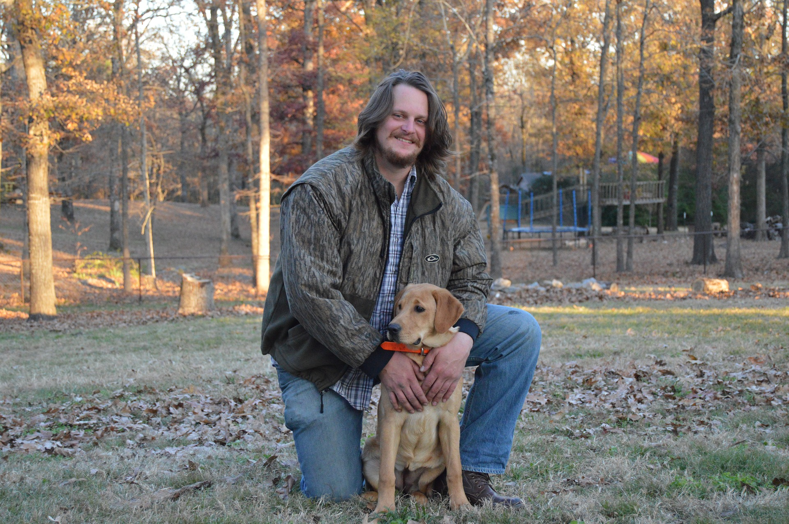

Purpose, Audience, and Goal
The purpose of this product is to help bring some peace of mind when dealing with the loss of a loved one. We have all experienced grief in our lives and I am hopeful that creating a special scene with your lost loved one will help bring you comfort during the grieving process. We help create the memories that will last a lifetime.
My audience includes anyone that has had the loss of pet. There is no age range where this would not have an impact on. The loss of pet is traumatic and hits any age, Life Stage, Gender, Ethnicity, Relationship Status, Income, Wealth, Family type, Profession, and Lifestyle. This site is being designed for anyone that wants a connection with the loved ones that have passed away.
The goal of this site is to attract freelance clients.
Persona

Name
Demographics
- 32 years old
- Works for Plunkett Home Furnishings as their Tax Accountant since 2011
Technology
- Dell Inspiron 24 5000 Silver Touch All-In-One (Computer)
- Samsung Galaxy S10+ with 128gb (Cell-phone)
- Google Chrome (Browser) with DuckDuckGo (Search Engine)
Behaviors/Attitudes
- Enjoys Nature
- Very easy going
- Good listener
- Extremely Organized in and out of office
Scenario
- Recently lost his best friend Duke, pictured here, to old age. James had Duke for 15 years. Duke was his longest and dearest friend. James is going through the stages of grief and looking for closure.
Additional
- James is feeling frustrated with the online presence that offers pet memorabilia.
- James is looking for a place that understands pet loss.